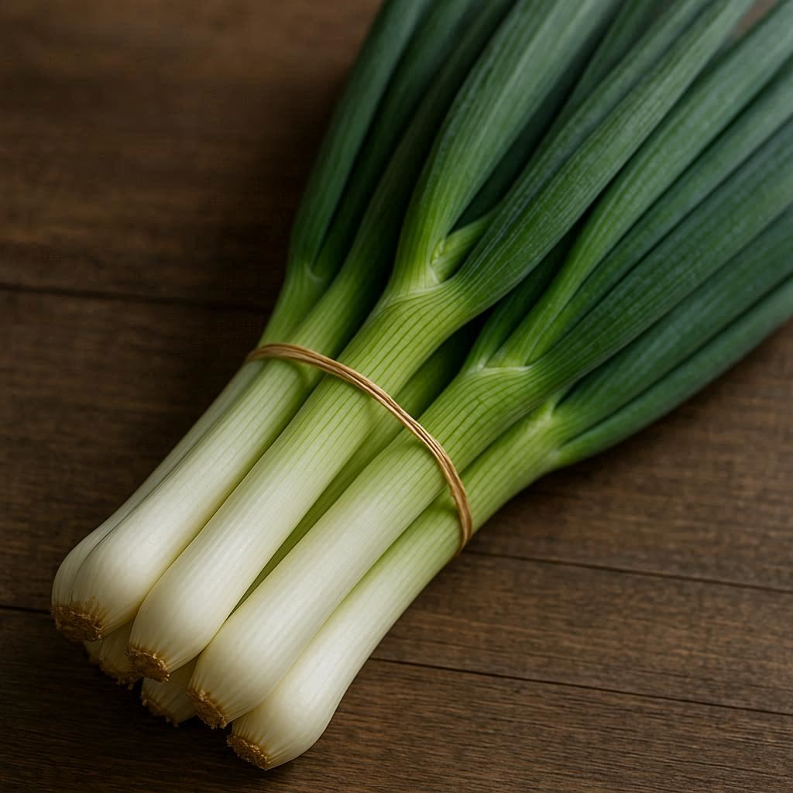
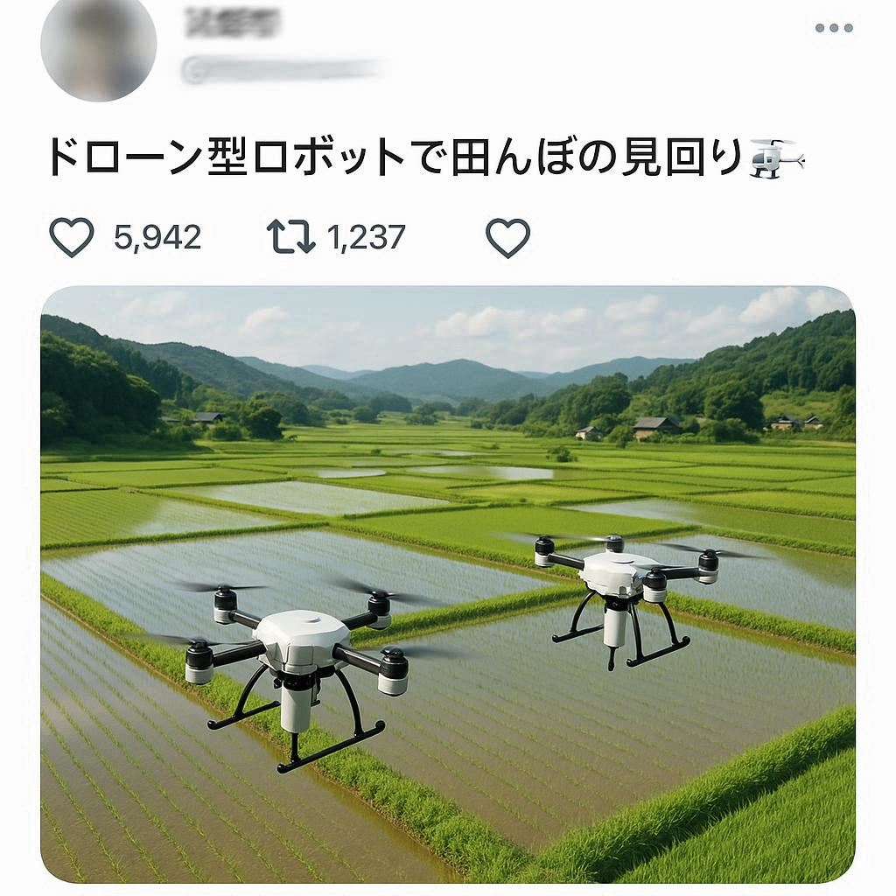

農業は勘と経験に頼るもの、という常識が変わりつつあります。埼玉県内の農家では、AIを搭載したセンサーやドローンを使い、農地の状態をリアルタイムで分析する取り組みが始まっています。土壌の湿度、作物の生育状況、病気の兆候などをデータで把握することで、水やりや肥料の量を最適化し、安定した高品質な作物を栽培できるようになりました。これにより、若い世代の新規参入も容易になり、農業の担い手不足解消への期待が高まっています。

#01 AIとデータで変わる野菜作り
都市部での食料生産を可能にする水耕栽培も、埼玉で注目されているイノベーションの一つです。特に、LED照明と温度管理が徹底された屋内農園では、天候に左右されることなく年間を通して安定的に野菜を生産できます。化学肥料を使わないオーガニック栽培や、栄養価を高めた特殊な野菜も開発されており、都市に住む人々に新鮮で安全な食材を提供しています。

#02 伝統と革新が融合する地場産品
埼玉の農業は、単なる生産性の向上に留まりません。その土地ならではのユニークな農産物をブランド化し、付加価値を高める取り組みも盛んです。例えば、埼玉の伝統野菜である里芋「川越いも」や、県内でしか生産されない深谷ねぎは、その品質と風味の良さから全国的な人気を博しています。近年では、これらの伝統的な農産物を新しい品種と掛け合わせたり、加工品として販売したりすることで、新たな市場を開拓しています。

#03 消費者とのつながりを強化
未来の農業は、生産者と消費者がより密接につながる形を目指しています。直売所の運営はもちろん、SNSを通じて日々の農作業の様子を発信したり、収穫体験イベントを開催したりすることで、消費者との信頼関係を築いています。これにより、農産物の価値を直接伝え、生産者の顔が見える安心感を提供しています。